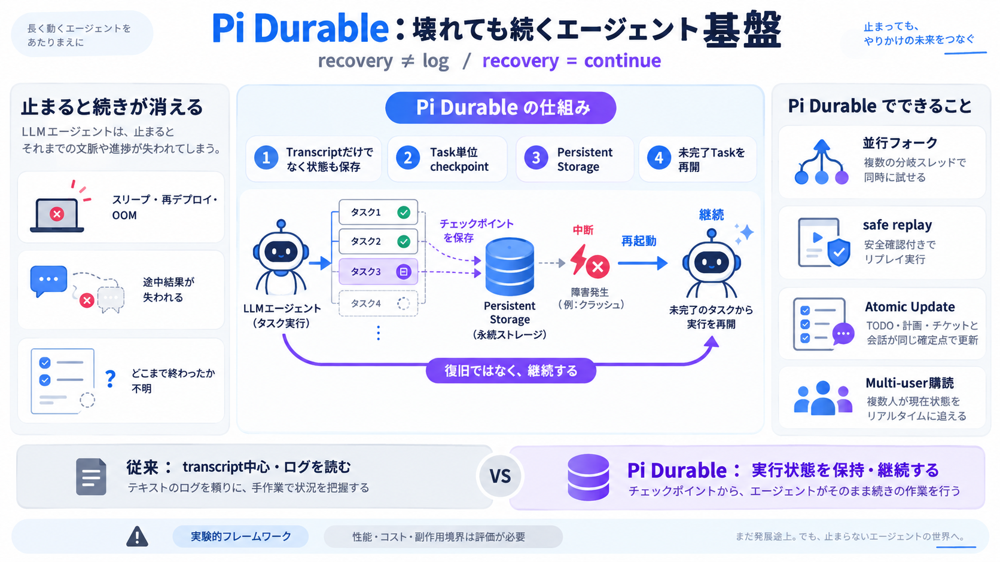

await Is Not a Context Switch: Understanding Python's Coroutines vs Tasks | Mergify
Skip to content 🇫🇷We're hiring a Staff Software Engineer in France→ Download Brand Assets Visit Brand Guidelines Meh…

Skip to content 🇫🇷We're hiring a Staff Software Engineer in France→ Download Brand Assets Visit Brand Guidelines Meh…
that he'd been an idiot. | [...] Here’s a horror story for you. [...] and "await asyncio.sleep(0)" are not behaviorally …
Native coroutines and the associated new syntax features make it possible to define context manager and iteration protoc…
It implements two special coroutine methods: + `__aenter__()` — awaited when entering the context + `__aexit__()` — …
How can I pass context from on asynchronous method call to another one - without using method parameters? I need the fea…